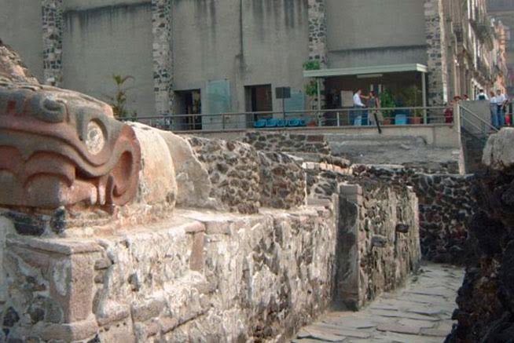

The Ancient Aztecs: Foundation of a City
Mexico City stands atop the ruins of the legendary Aztec capital, Tenochtitlán. At its heart was the massive Templo Mayor, where impressive ceremonies shaped an empire that stretched across Mesoamerica. Today, visitors can walk among the unearthed stones of the Templo Mayor and feel the presence of this ancient civilization. Modern Mexico City still honors its Aztec roots through museums, street art, and festivals, blending past and present into everyday life.
Frida Kahlo: The Iconic Voice of Mexican Art

Frida Kahlo’s influence is woven throughout the cultural landscape of Mexico City. Her distinctive self-portraits capture pain, beauty, and national identity with bold colors and powerful symbolism. The Casa Azul (“Blue House”) in Coyoacán, now the Frida Kahlo Museum, offers a deeply personal look into her life and art. Frida’s work inspires visitors from around the world to experience Mexican art as uniquely personal, passionate, and universal.
Explore More: Iconic Museums & Landmarks
- National Museum of Anthropology
- Palacio de Bellas Artes
- Diego Rivera Mural Museum
- Casa Azul – Frida Kahlo Museum